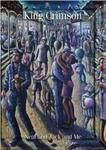

Home Artist links Label link

King Crimson - Neal And Jack And Me
| Artist: | King Crimson |
| Title: | Neal And Jack And Me |
| Label: | Discipline Global Mobile DGM0401 |
| Length(s): | 143 minutes |
| Year(s) of release: | 2004 |
| Month of review: | [04/2005] |
Line up
Robert Fripp - guitar
Adrian Belew - guitar, vocals, percussion
Tony Levin - bass, stick, synth, backing vocals
Bill Bruford - drums, percussion
Tracks
Three Of A Perfect Pair - Live In Japan 1984:
| 1) | Three Of A Perfect Pair |
|
| 2) | No Warning |
|
| 3) | Larks' Tongues In Aspic III |
|
| 4) | Thela Hun Ginjeet |
|
| 5) | Frame By Frame |
|
| 6) | Matte Kudasai |
|
| 7) | Industry |
|
| 8) | Dig Me |
|
| 9) | Indiscipline |
|
| 10) | Sartori In Tangier |
|
| 11) | Man With An Open Heart |
|
| 12) | Waiting Man |
|
| 13) | Sleepless |
|
| 14) | Larks' Tongues In Aspic II |
|
| 15) | Elephant Talk |
|
| 16) | Heartbeat |
|
The Noise - Live In Frejus:
| 1) | Waiting Man |
|
| 2) | Matte Kudasai |
|
| 3) | The Sheltering Sky |
|
| 4) | Neal And Jack And Me |
|
| 5) | Indiscipline |
|
| 6) | Heartbeat |
|
| 7) | Larks' Tongues In Aspic II |
|
Summary
The music
This DVD is mostly a re-release of two concerts formerly released on VHS. The first concert was recorded in Japan in 1984. The presentation is mostly pretty static, with Belew and Levin taking the public attention, Fripp characteristically sitting on the side. Still, there really isn't much to see most of the time, even when Belew gets a chance to up his voice with material written during his membership. Especially during the first half Bruford uses a lot of those hollow sounding drum pads, which seem to emphasize the somewhat stiff quality of the eighties era KC music. Not until Sartori In Tangier do we see him really get into action, Bruford getting up as well. After that we get a percussion duel between Belew & Bruford. And there is a brief piece in which we see the band go about town, taking Fripp in the open. Especially Belew seems to be enjoying himself quite a bit, all smiles, bouncing around the stage. To the point of being, well, irritating.
The second offering was recorded on the Beat tour, two years prior. Five of the seven tracks played here are also in the other concert, which helps emphasizing the similarities between the concerts. Having said that: this concert makes some more room for percussion with both the percussion duel between Belew and Bruford from Waiting Man and a lengthy solo at the start of Indiscipline. I could understand that in a two+ hour set, but not in the 51 minutes of this one. And, oh yeah, it's them bluddy sample pads again. An upside of the Big Bruford role is that Belew plays less of a front man role.
The rather sharp Aspic II version on this concert is quite worthwhile, definitely the most interesting bit on this disc.
The bonus shows Levin's tour photos (pretty nice stuff, nothing of the normal boring pics) and a video for the Sleepless track. Bit of an oddity, that one, I would guess.
Conclusion
Although a re-release I do feel this release offers more value than the other KC DVD I saw (Deja Vroom), by its (near) two and a half hours of music. Even then I would not exactly call the images an addition, especially not with Belew bouncing around the house. From a musical point of view I would say that most of the material presented is eighties KC, not my favourite era. I find my interests go up when one of the sparse older tracks comes by. I would take pretty much any seventies live CD over this eighties live DVD, but as a replacement of VHS this dolby surround DVD is a serious improvement with a lot of extra bits making up some nice extra bits, of course.
© Roberto Lambooy